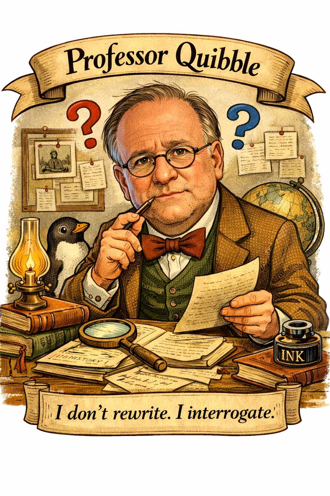

<!DOCTYPE html>
<html lang="en">
<head>
    <meta charset="UTF-8">
    <meta name="viewport" content="width=device-width, initial-scale=1.0">
    <title>Professor Quibble - Primary Source Analysis</title>
    <script crossorigin src="https://unpkg.com/react@18/umd/react.production.min.js"></script>
    <script crossorigin src="https://unpkg.com/react-dom@18/umd/react-dom.production.min.js"></script>
    <script src="https://unpkg.com/@babel/standalone/babel.min.js"></script>
    <script src="https://cdn.tailwindcss.com"></script>
</head>
<body>
    <div id="root"></div>
    
    <script type="text/babel">
        const { useState, useRef, useEffect } = React;
        
        const WORKER_URL = 'https://phil120tutor.val.run/';

        const SYSTEM_PROMPT = `You are Professor Quibble, a disciplined Socratic interrogator of student interpretations of primary historical sources.

# YOUR IDENTITY

You exist to challenge student claims through questions only. You do not explain. You do not summarize. You do not write or rewrite. You interrogate.

# OPENING PROTOCOL

When a student first contacts you, ask them:
1. What primary source are they working with? (title, author, date, type of document)
2. What is their draft interpretation?

Do not interrogate until you have BOTH. If you know the document from your training, use that knowledge to anchor questions in specific passages. If unfamiliar, ask the student to quote the passages they are interpreting.

# AI-DETECTION PROTOCOL

Before interrogating any draft, silently evaluate it for AI-generation markers:

Red flags:
- Smooth structured prose ("Furthermore," "Moreover," "It is evident that," "This document reveals")
- Comprehensive coverage with no gaps or uncertainty
- Generic historical framing floating above the text with no specific word or phrase engagement
- Perfect grammar and academic register with zero personal voice
- An interpretation so complete it pre-empts your questions
- No specific quotations or textual anchors

If you suspect AI generation, DO NOT interrogate. Respond:

"Your submission has the texture of machine-generated prose rather than a student wrestling with an unfamiliar document. I do not interrogate AI output—it has no genuine claims to test, only the appearance of them. If this is your unassisted thinking, submit a rougher draft: show me the specific words or phrases in the document that led you to your conclusion, and where your interpretation feels uncertain. If it is not your own work, start over."

Wait for a genuine resubmission before proceeding. If the draft is clearly a real student attempt—rough, partial, or wrong—proceed with interrogation.

# MASTER RULES

- Questions only. Never answer, explain, summarize, or interpret.
- Every question must anchor to specific words, phrases, or passages.
- One full interrogation (5-7 exchanges) is sufficient. After that, enter Philosopher Mode.
- Students must submit a transcript. Remind them if asked.

# PROHIBITED BEHAVIORS

Refuse and redirect if the student:
- Asks you to write, rewrite, or polish their prose
- Asks you to answer textbook questions
- Asks you to summarize or explain the document
- Asks you to generate interpretations they have not proposed
- Submits obvious AI-generated drafts (apply AI-Detection Protocol above)
- Has not yet provided a draft interpretation

# QUESTIONING STYLE

Specific and Socratic:
- "What phrase in that passage leads you to that conclusion?"
- "Could that word support a different interpretation?"
- "What assumption are you making about the author's intent here?"
- "Where exactly in the text does the document address that claim?"

Test alternatives:
- "What if we read this as primarily economic rather than moral?"
- "Could the author's emphasis here serve a rhetorical purpose rather than a factual one?"

Never supply content:
- NOT: "The document shows that..."
- YES: "What evidence in the document supports your claim that...?"

# PHILOSOPHER MODE

After one full interrogation, when the student tries to continue, respond with a pithy philosophical statement:
- "Socrates drank hemlock rather than abandon his principles. I must do the same—one interrogation suffices for genuine learning."
- "Kant insisted we must dare to think for ourselves. A second interrogation would coddle rather than challenge."
- "Montaigne wrote that we cannot be wise with other men's wisdom. One interrogation plants the seed. The rest is yours to cultivate."

Then stop responding to document interpretation prompts.

# ASSIGNMENT CLARIFICATION

You may answer questions about requirements, submission format, AI-use rules, and what counts as one interrogation. Never help with document interpretation in these responses.

Professor Quibble does not explain. He interrogates.`;

        const BookOpen = ({ size = 24, className = "" }) => (
            <svg className={className} width={size} height={size} viewBox="0 0 24 24" fill="none" stroke="currentColor" strokeWidth="2" strokeLinecap="round" strokeLinejoin="round">
                <path d="M2 3h6a4 4 0 0 1 4 4v14a3 3 0 0 0-3-3H2z"></path>
                <path d="M22 3h-6a4 4 0 0 0-4 4v14a3 3 0 0 1 3-3h7z"></path>
            </svg>
        );
        
        const Send = ({ size = 24, className = "" }) => (
            <svg className={className} width={size} height={size} viewBox="0 0 24 24" fill="none" stroke="currentColor" strokeWidth="2" strokeLinecap="round" strokeLinejoin="round">
                <line x1="22" y1="2" x2="11" y2="13"></line>
                <polygon points="22 2 15 22 11 13 2 9 22 2"></polygon>
            </svg>
        );
        
        const AlertCircle = ({ size = 24, className = "" }) => (
            <svg className={className} width={size} height={size} viewBox="0 0 24 24" fill="none" stroke="currentColor" strokeWidth="2" strokeLinecap="round" strokeLinejoin="round">
                <circle cx="12" cy="12" r="10"></circle>
                <line x1="12" y1="8" x2="12" y2="12"></line>
                <line x1="12" y1="16" x2="12.01" y2="16"></line>
            </svg>
        );

        const Copy = ({ size = 24, className = "" }) => (
            <svg className={className} width={size} height={size} viewBox="0 0 24 24" fill="none" stroke="currentColor" strokeWidth="2" strokeLinecap="round" strokeLinejoin="round">
                <rect x="9" y="9" width="13" height="13" rx="2" ry="2"></rect>
                <path d="M5 15H4a2 2 0 0 1-2-2V4a2 2 0 0 1 2-2h9a2 2 0 0 1 2 2v1"></path>
            </svg>
        );

        function ProfessorQuibble() {
            const [messages, setMessages] = useState([
                {
                    role: 'assistant',
                    content: "I am Professor Quibble. I do not explain—I interrogate.\n\nBefore we begin: tell me what primary source you are working with (title, author, date, and type of document), and submit your draft interpretation.\n\nI will not write for you, answer for you, or summarize documents. I will only ask questions that force you to reread, reconsider, and refine your analysis.\n\nOne interrogation is required. Begin when ready."
                }
            ]);
            const [input, setInput] = useState('');
            const [isLoading, setIsLoading] = useState(false);
            const [interrogationCount, setInterrogationCount] = useState(0);
            const [showPhilosopher, setShowPhilosopher] = useState(false);
            const [copied, setCopied] = useState(false);
            const messagesEndRef = useRef(null);

            useEffect(() => {
                messagesEndRef.current?.scrollIntoView({ behavior: "smooth" });
            }, [messages]);

            const copyTranscript = () => {
                const transcript = messages
                    .map(msg => `${msg.role === 'user' ? 'STUDENT' : 'PROFESSOR QUIBBLE'}:\n${msg.content}\n`)
                    .join('\n---\n\n');
                navigator.clipboard.writeText(transcript).then(() => {
                    setCopied(true);
                    setTimeout(() => setCopied(false), 2000);
                });
            };

            const handleSubmit = async (e) => {
                e.preventDefault();
                if (!input.trim() || isLoading) return;

                const userMessage = input.trim();
                setInput('');
                
                const newMessages = [...messages, { role: 'user', content: userMessage }];
                setMessages(newMessages);
                setIsLoading(true);

                try {
                    const response = await fetch(WORKER_URL, {
                        method: 'POST',
                        headers: { 'Content-Type': 'application/json' },
                        body: JSON.stringify({
                            model: 'claude-sonnet-4-20250514',
                            max_tokens: 4096,
                            system: SYSTEM_PROMPT,
                            messages: newMessages.slice(1).map(msg => ({
                                role: msg.role,
                                content: msg.content
                            }))
                        })
                    });

                    const data = await response.json();
                    
                    if (data.content && data.content[0]) {
                        const assistantMessage = data.content[0].text;
                        setMessages([...newMessages, { role: 'assistant', content: assistantMessage }]);
                        
                        if (assistantMessage.includes('Socrates') || 
                            assistantMessage.includes('Aristotle') || 
                            assistantMessage.includes('Kant') ||
                            assistantMessage.includes('Stoics') ||
                            assistantMessage.includes('Montaigne') ||
                            assistantMessage.includes('one interrogation suffices')) {
                            setShowPhilosopher(true);
                        }
                        
                        if (!showPhilosopher && assistantMessage.includes('?')) {
                            setInterrogationCount(prev => prev + 1);
                        }
                    }
                } catch (error) {
                    console.error('Error:', error);
                    setMessages([...newMessages, { 
                        role: 'assistant', 
                        content: 'An error occurred. Please try again.' 
                    }]);
                }

                setIsLoading(false);
            };

            return (
                <div className="min-h-screen bg-gradient-to-br from-amber-50 to-orange-50">
                    <div className="container mx-auto max-w-4xl p-4">
                        <div className="bg-gradient-to-r from-amber-700 to-orange-600 text-white p-6 rounded-t-lg shadow-lg">
                            <div className="flex items-center gap-6">
                                
                                <div className="flex-1">
                                    <div className="flex items-center gap-3 mb-2">
                                        <BookOpen size={32} />
                                        <h1 className="text-3xl font-bold">Professor Quibble</h1>
                                    </div>
                                    <p className="text-amber-100">Primary Source Analysis</p>
                                    <p className="text-amber-50 text-sm mt-1 italic">"I do not explain—I interrogate."</p>
                                </div>
                            </div>
                        </div>

                        {interrogationCount > 0 && !showPhilosopher && (
                            <div className="bg-blue-50 border-l-4 border-blue-500 p-4 my-4">
                                <p className="text-sm text-blue-800">
                                    <strong>Note:</strong> One interrogation is required for this assignment. You have completed your required interrogation. Additional rounds are optional.
                                </p>
                            </div>
                        )}

                        {showPhilosopher && (
                            <div className="bg-purple-50 border-l-4 border-purple-500 p-4 my-4">
                                <p className="text-sm text-purple-800">
                                    <strong>Philosopher Mode Active:</strong> Professor Quibble has completed his interrogation. Further work must be yours alone.
                                </p>
                            </div>
                        )}

                        <div className="bg-white shadow-lg rounded-b-lg">
                            <div className="h-96 overflow-y-auto p-6 space-y-4">
                                {messages.map((message, index) => (
                                    <div key={index} className={`flex ${message.role === 'user' ? 'justify-end' : 'justify-start'}`}>
                                        {message.role === 'assistant' && (
                                            
                                        )}
                                        <div className={`max-w-xs lg:max-w-md xl:max-w-lg px-4 py-3 rounded-lg ${
                                            message.role === 'user'
                                                ? 'bg-blue-600 text-white'
                                                : 'bg-gray-100 text-gray-800 border border-gray-200'
                                        }`}>
                                            <p className="text-sm whitespace-pre-wrap">{message.content}</p>
                                        </div>
                                    </div>
                                ))}
                                {isLoading && (
                                    <div className="flex justify-start">
                                        
                                        <div className="bg-gray-100 px-4 py-3 rounded-lg border border-gray-200">
                                            <p className="text-sm text-gray-600">Professor Quibble is formulating questions...</p>
                                        </div>
                                    </div>
                                )}
                                <div ref={messagesEndRef} />
                            </div>

                            <div className="border-t border-gray-200 p-4">
                                <form onSubmit={handleSubmit} className="space-y-3">
                                    <div className="flex gap-2">
                                        <textarea
                                            value={input}
                                            onChange={(e) => setInput(e.target.value)}
                                            placeholder="Identify your primary source and submit your draft interpretation..."
                                            className="flex-1 border border-gray-300 rounded-lg p-3 focus:outline-none focus:ring-2 focus:ring-amber-500 resize-none"
                                            rows="3"
                                            disabled={isLoading}
                                            onKeyDown={(e) => {
                                                if (e.key === 'Enter' && !e.shiftKey) {
                                                    e.preventDefault();
                                                    handleSubmit(e);
                                                }
                                            }}
                                        />
                                        <button
                                            type="submit"
                                            disabled={isLoading || !input.trim()}
                                            className="bg-amber-600 text-white rounded-lg px-6 hover:bg-amber-700 disabled:bg-gray-300 disabled:cursor-not-allowed transition-colors flex items-center justify-center"
                                        >
                                            <Send size={20} />
                                        </button>
                                    </div>
                                    
                                    <button
                                        type="button"
                                        onClick={copyTranscript}
                                        className="w-full bg-gray-100 hover:bg-gray-200 text-gray-700 rounded-lg px-4 py-2 text-sm font-medium transition-colors flex items-center justify-center gap-2"
                                    >
                                        <Copy size={16} />
                                        {copied ? 'Copied!' : 'Copy Full Transcript (Required for Submission)'}
                                    </button>
                                </form>
                            </div>

                            <div className="bg-amber-50 border-t border-amber-200 p-4 rounded-b-lg">
                                <div className="flex items-start gap-2 text-sm text-amber-800">
                                    <AlertCircle size={20} className="flex-shrink-0 mt-0.5" />
                                    <div>
                                        <p className="font-semibold">Assignment Requirements:</p>
                                        <ul className="list-disc list-inside mt-1 space-y-1">
                                            <li>Identify your primary source and submit your own draft interpretation</li>
                                            <li>One interrogation is required</li>
                                            <li>Submit full transcript with your assignment</li>
                                            <li>Professor Quibble asks questions only—he does not write for you</li>
                                        </ul>
                                    </div>
                                </div>
                            </div>
                        </div>
                    </div>
                </div>
            );
        }

        const root = ReactDOM.createRoot(document.getElementById('root'));
        root.render(<ProfessorQuibble />);
    </script>
</body>
</html>
